宇树G1+傲意
魔迅设备遥操宇树机器人&傲意灵巧手
网络连接
使用公司华硕路由器，此路由器已将网段固定在192.168.123.xxx下。因为宇树机器人遥操作需要再此网段下才能驱动。
路由器wifi名字:MoretionDev密码:fasiklfasikl
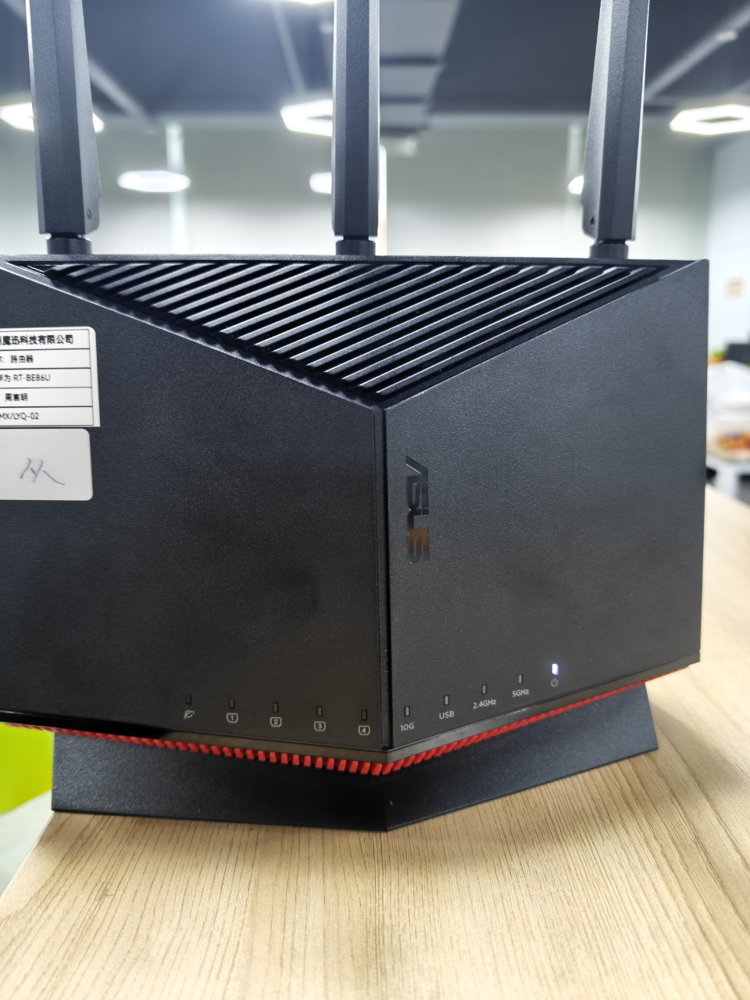{width="1.4583333333333333in" height="1.9479166666666667in"}
注意事项：
-
运行MS软件的电脑和路由器使用无线连接
-
宇树机器人和路由器使用有线连接
-
运行宇树机器人驱动脚本的华为笔记本(Linux)和路由器无线连接，此电脑密码：2024
华为笔记本(Linux)信息
查看电脑的ip
在电脑桌面右键Open in Terminal，输入指令ifconfig查看ip。可以看到此电脑的ip是192.168.123.122
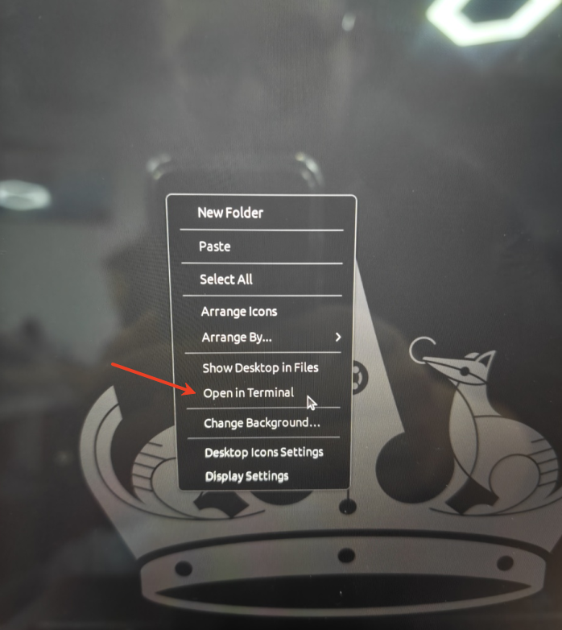{width="1.96875in" height="2.2083333333333335in"}
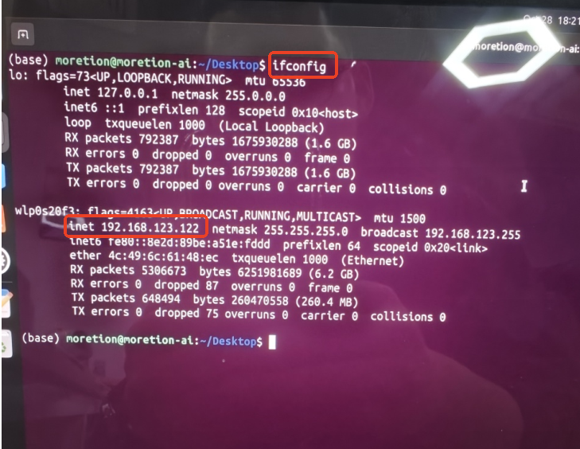{width="1.96875in" height="1.5208333333333333in"}
设置机器人驱动脚本ip和port
在/home/moretion/Desktop/motionCapture_teleoperte路径下双击打开moxun_robot.py脚本设置ip和port。ip为上方查看到的ip，port可以自定义例如：8888
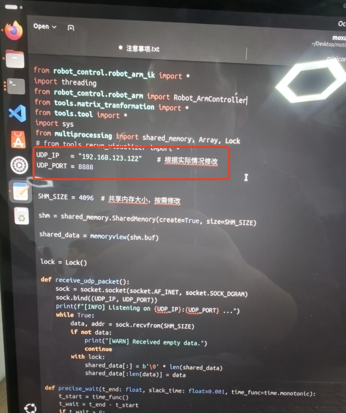{width="3.7083333333333335in" height="4.427083333333333in"}
MS软件设置
磁校准
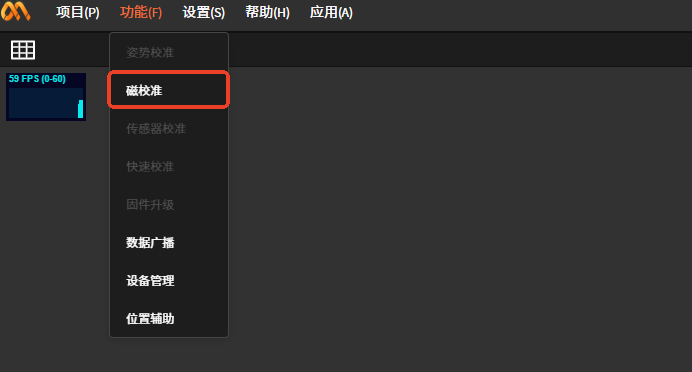{width="4.166666666666667in" height="2.2395833333333335in"}
连接设备
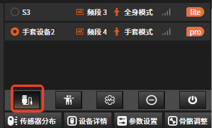{width="3.7083333333333335in" height="2.2395833333333335in"}
组合设备
全身+手套不组合使用可能会影响机器人的驱动
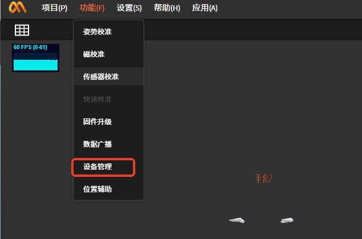{width="3.7708333333333335in" height="2.5in"}
 {width="3.7708333333333335in"
height="3.1770833333333335in"}
{width="3.7708333333333335in"
height="3.1770833333333335in"}
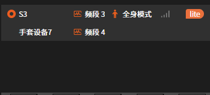{width="3.7708333333333335in" height="1.71875in"}
姿势校准
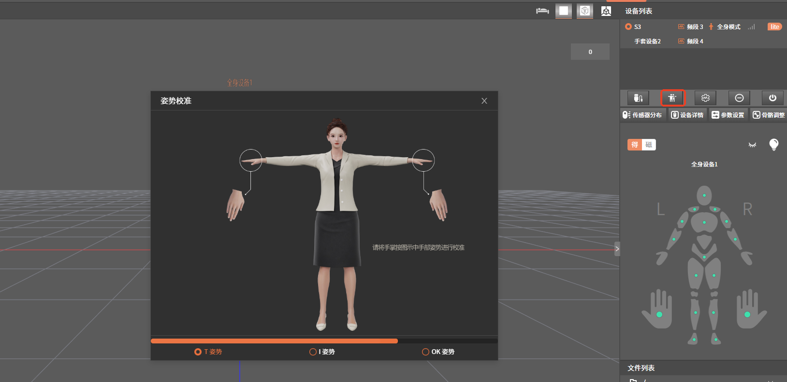{width="3.7708333333333335in" height="1.8333333333333333in"}
数据广播
协议类型选择UDP
ip port说明：
192.168.123.122:8888是华为笔记本(Linux)脚本moxun_robot.py中设置的ip和port
192.168.123.36:7777是跑傲意灵巧手软件中界面设置的ip和port
 {width="3.7708333333333335in"
height="2.2083333333333335in"}
{width="3.7708333333333335in"
height="2.2083333333333335in"}
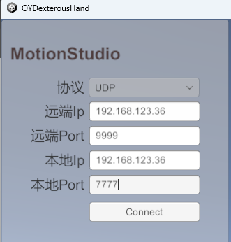{width="3.7708333333333335in" height="3.9375in"}
傲意灵巧手软件设置
要求魔迅手套能正常驱动傲意灵巧手，详细使用说明见下方文档
运行机器人驱动脚本
前提：上述流程已经走完，宇树机器人已调为测试模式
#打开控制台
在华为笔记本(Linux)/home/moretion/Desktop/motionCapture_teleoperte文件夹下右键点击Open in Terminal(打开控制台)。
#创建conda环境
输入指令conda activate tv按下"enter"键，切换环境
#运行脚本
输入指令python moxun_robot.py按下"enter"键
如果上述流程都正确操作的话机器人会切换到准备状态，此时穿戴动捕设备的真人做下图准备姿势
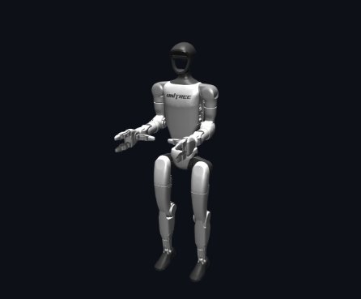{width="3.1458333333333335in" height="2.6041666666666665in"}
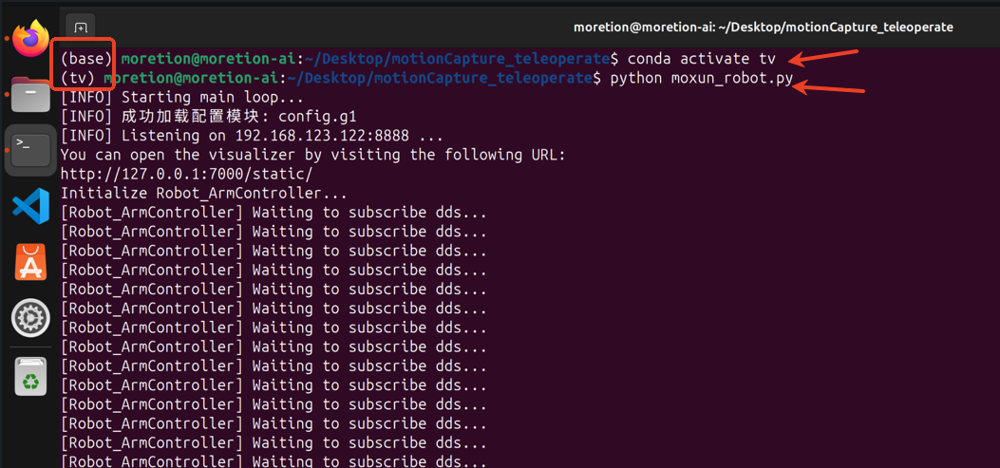{width="3.1458333333333335in" height="1.46875in"}
输入指令r按下"enter"键
正常情况真人就可以遥操作机器人了
#退出程序
在控制台中按下ctrl+c键退出程序
在控制台不关闭的前提下，下次直接从\"#运行脚本\"那里往下走就可以了
注意事项
在遥操作机器人的过程中，魔迅软件不能做姿势校准
如果遥操宇树机器人&傲意灵巧手，魔迅全身+手套需要改为组合模式
设备清单：路由器、网线、运行ms软件的电脑(windows)、运行遥操作的电脑(Linux)、全身惯捕设备(1)、
手套惯捕设备(1)